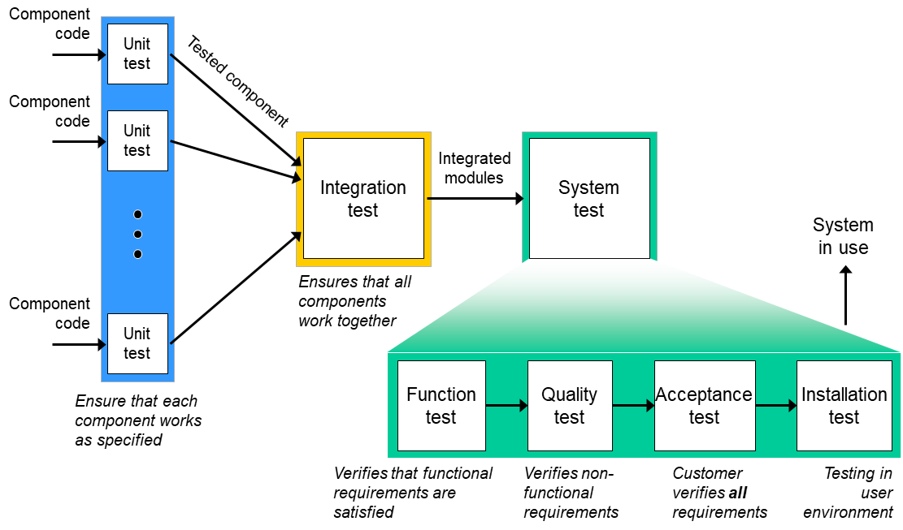

class: center, middle, main-title # Software Testing --- ## Today - Course organization - Virgilijus is on paternity leave - Feedback - Content - Can we write software without defects? - If not, could we find them in an automated way? - Questions, ideas, comments - [Sli.do #VUSE1909](https://app.sli.do/event/vpgfoqwj) --- ## Course organization - Virgilijus is on paternity leave - Project work continues with me --- ## Feedback form - Thank you for participating - Results TODO --- ## Quality assurance - Everything we do to ensure proper quality -- - Quality = fit for purpose and satisfies expectations -- - Covers both - Prevention of defects - Detection and correction of defects -- - Some examples - Adhering to standards and proven processes - Reviewing various artifacts - Using formal methods - Testing -- - **Testing** is the primary vehicle for quality assurance --- ## Software testing - Everyone who develops software does testing -- - Testing is *running* the program with *selected inputs* and checking that *actual* results match *expectations* -- - We can do it *at random* or *systematically* --- ## Example: Print constant text ``` class MyProgram { public static void main() { System.out.println("Hello, world!"); } } ``` -- - Always behaves the same way - Expected output: constant `Hello, world!` -- Testing is trivial --- ## Example: Twice the number `<T extends Number> T twice(T number)` -- - `T` is `Byte` - Inputs [-128; 127] - 256 different input values -- - `T` is `Long` - Inputs [–9,223,372,036,854,775,808; 9,223,372,036,854,775,807] - 1.8E19 different input values -- - `T` is `BigInteger` - Input space: (loosely) infinite -- Testing with all inputs is not **possible** or **feasible** --- ## Input selection - How do we choose which inputs to test with? -- (*test cases*) - *Test case* = particular choice of input data + expected outcome -- - Random selection is not efficient -- - Fundamental idea - Correct results for tested inputs should be representative of correct results for untested inputs -- - There are heuristics that help us choose (*test case design*) -- - Equivalence groups (black-box) - Boundaries (black-box) - Control flow (white-box) - States (white-box) --- ## Equivalence groups Test cases for `int sqare(int number)`? -- Idea - A fault in code often affects a whole group of similar inputs - It's unlikely that values within the same group of similar inputs produce different results -- Therefore 1. Partition input space into logical equivalence groups 2. Choose input values from each group --- ## Boundary conditions Test cases for `int sqare(int number)`? -- Idea - Faults are more likely at the boundaries of equivalence groups - E.g. confusion between `>` and `>=`, and other *off-by-one errors* -- Therefore - Choose input values at the boundaries - Choose "special" values (`null`, `0`, min/max values, etc.) --- ## Control flow ``` public static int foo(int a, int b) { int result = 5; if (a > 15) { result = a; } return b > 10 ? result + b : result - b; } ``` -- Idea - A piece of code has a finite number of different paths through it -- Therefore - Choose inputs that exercise every path --- ## More examples - `Set<Polygon> splitIntoEqualAreas(Polygon p)` -- - `List<Route> route(Point from, Point to)` -- - `List<SearchResult> google(String query, User u)` -- - `Img style(Img source, F<Img, Img> transform)` --- ## In practice - With testing we cannot prove absence of defects -- - Any nontrivial system will not be tested completely -- - The more we test - The more *confidence* we have in the quality of the system -- - The more *time* and *money* we spend -- - Gaol is to discover *important* defects as quickly and cheaply as possible -- - Test design is difficult --- ## Test types  --- ## Tests in development - Let's say we have a number of test cases for our system -- - We want to execute test cases after every change -- - **Manual testing gets expensive very quickly** --- ## Test automation - Idea - Write short programs/scripts that exercise system under test and check if expectations are met -- - Different types of tests can be automated - Unit tests - Integration tests - Acceptance tests - Performance tests - Security tests - Etc. -- - There are tools, libraries and framewroks that facilitate this --- ## JUnit example ``` class VatRateTest { @Test void defaultRate_lithuania_correctValue() { VatRate rate = new VatRate("LT"); BigDecimal actualResult = rate.defaultRate(); BigDecimal expectedResult = new BigDecimal("0.21"); assertEquals(expectedResult, actualResult); } // other test cases } ``` -- - Test "succeeds" (is green) if expectation is met -- - Test "fails" (is red) if it expectation is not met -- - Failures are what we want --- Test "suceeds" if it shows an error - - Test automation Goal: smallest possible set that would provide sufficient confidence ??? Pratyboms: Practice - writing unit tests Best practices - separating given/when/then blocks, naming methods Testing `getDefaultVatRate (depends on current time)` --- ## Example: VAT calculation Let's say we have a system that calculates VAT rates --- ## Example 1 `BigDecimal currentDefaultVatRate()` -- - Input space: N/A - Selected inputs: N/A - Expected result: constant `0.21` -- Probably not worth testing in isolation --- ## Automated test example ``` ``` ``` class VatRateTest { @Test void currentDefaultVatRate_always_correctValue() { BigDecimal actualResult = VatRate.currentDefault(); BigDecimal expectedResult = new BigDecimal("0.21"); assertEquals(expectedResult, actualResult); } } ``` --- ## Example 2 `BigDecimal amountWithVat(BigDecimal amount)` - Input space: - Selected inputs: - Expected results: Function: `String readDefaultSettingsFile()` - Input space -- - File does not exist - Empty file exists - File exists, but no permissions - Hardware IO error - ... --- ## Example 2 Space of possible inputs - Easy for linear problems - What about Machine learning? Time and resource constraints -> can't cover all Coverage - how much space we cover Issue: how to identify a set of "highest priority" tests? --- --- ## Key takeaways - Code is written for humans -- - Code should be optimized for readability -- - Code is not the only artifact being produced in construction phase -- - Code reviews are probably the most important practice to have in your team -- - Many tools are available - use them to your benefit --- class: middle, center # Questions? --- ## Next time - Discuss your feedback ([Form to submit it](https://forms.gle/4EAzS9anen8nYNSa7)) - Software testing - Can we write software without defects? - If not, could we find them in an automated way?